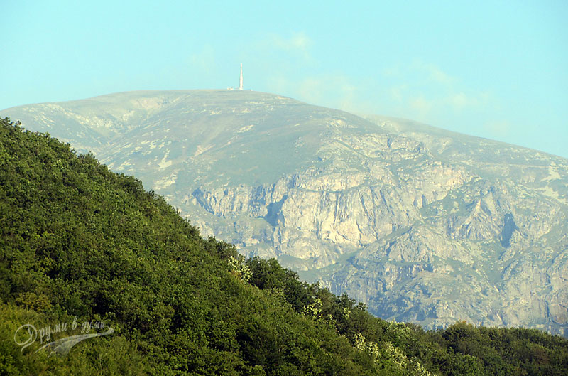
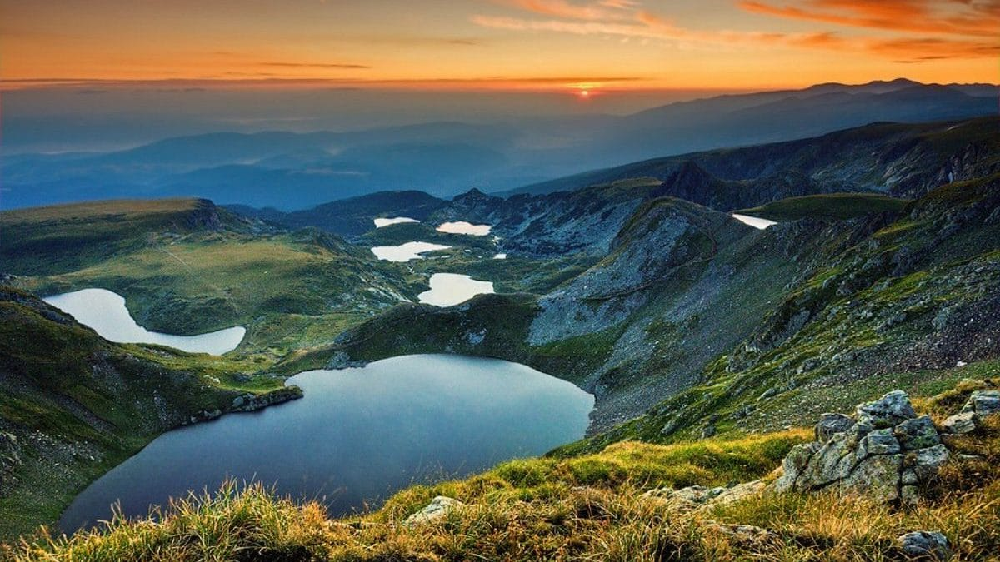
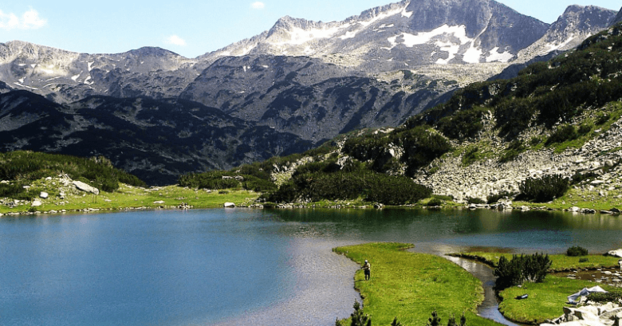
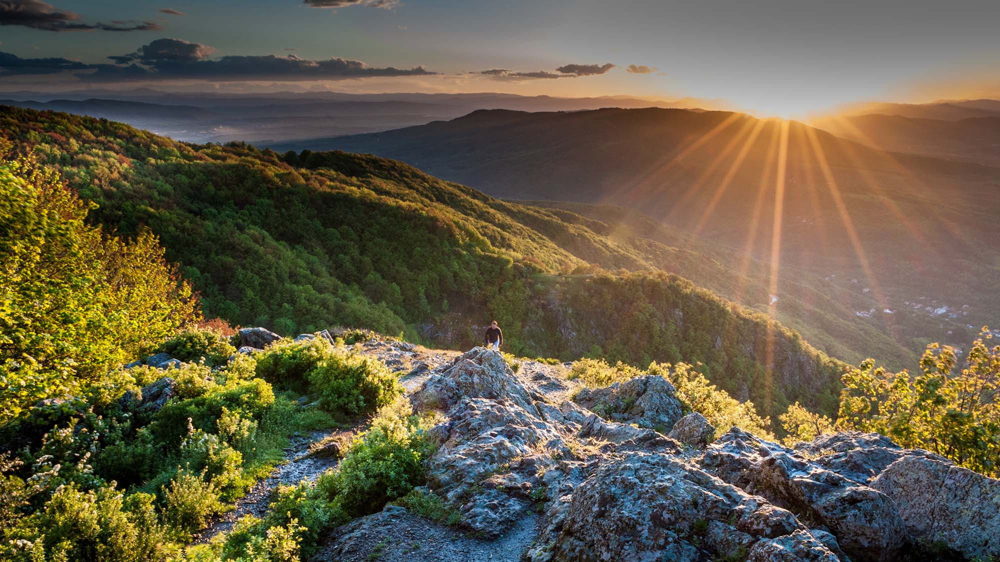
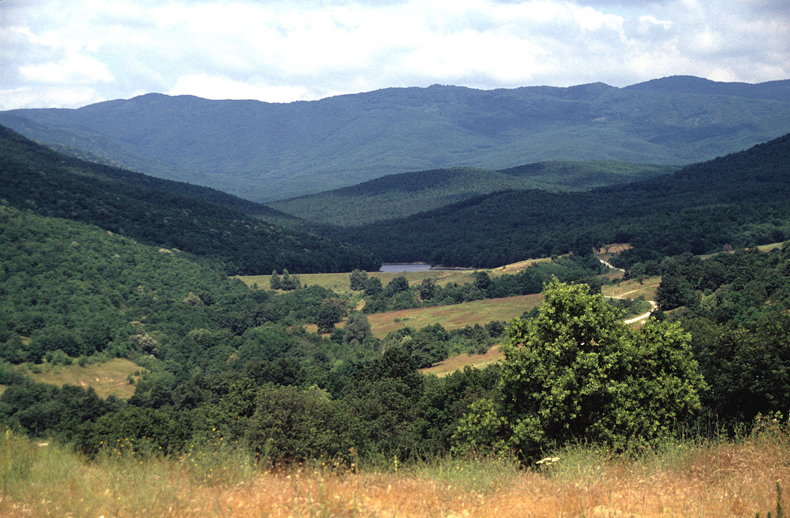
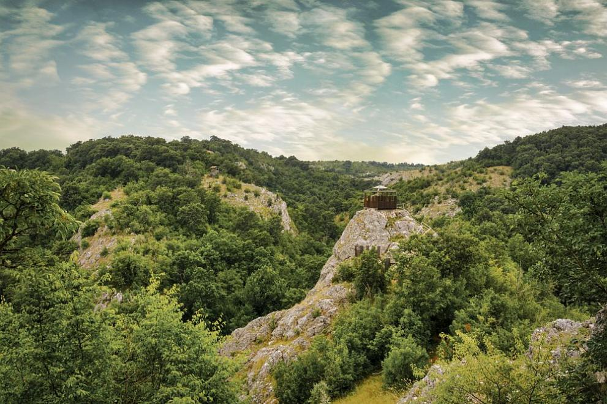

Планините в България
Една трета от територията на България е покрита от близо
40 планини. Българските планини са разнообразни по площ,
височина, релеф и биологичен свят. Те са красиви и достъпни
както през лятото, така и през зимата и предлагат отлични
условия за спорт, почивка и разходка.
Стара планини

Стара планина, Балкана, е
гръбнакът на България и на
Балканския полуостров. Тя е
протегнала дългата си снага
през средата на страната и
я разделя на две части. Найвисоката точка на Балкана
е връх Ботев (2376 м), а найизточната е нос Емине, където
планината се врязва в Черно
море.Стара планина се дели на
три дяла. Западният обхваща
територията на планината
от Белоградчишкия до
Ботевградския проход,
средният дял се простира
от Ботевград до прохода
Вратник в Сливенския Балкан, а
източният – от Сливен до нос
Емине.
В Стара планина има много
туристически маршрути,
екопътеки, хижи и заслони.
По дължината на планината
минава и част от международния
маршрут Е3, свързващ
Атлантическия океан с Черно
море – Ком – Емине.
Рила

Рила е най-величествената и
висока планина. Тя се намира в
Югозападна България и е част
от Рило-Родопския масив.
В Рила се издигат 31 върха с
височина над 2600 м. Тук се
намира най-високият връх
на Балканския полуостров –
Мусала (2925 м).
Други забележителности
на планината са Седемте
рилски езера с ледников
произход, Мусаленските езера
и Рилският манастир, който
е под егидата на ЮНЕСКО.
От Рила извират и три от
големите реки на България –
Искър, Марица и Места.
Рила е една от найпосещаваните от туристи
планини в България. Тук
има много туристически
маршрути, хижи, както и
планински курорти. Найизвестен сред курортите
е Боровец, който предлага
отлични условия за зимни
спортове.
Пирин

Планината Пирин също е
част от Рило-Родопския
масив. Разположена е на юг
от Рила. Пирин има алпийски
характер, с високи зъбери и
скални върхове. Тук се намира
вторият по височина връх в
България – Вихрен (2914 м). В
Пирин се издигат 33 върха с
височина над 2600 м.
Тук се намира и големият
български зимен курорт
Банско, който е популярна
дестинация за скиори и
сноубордисти.
Пирин е предпочитан от
планинарите и търсачите на
силни усещания. През снагата
на планината минават
различни маршрути, по
които са разположени хижи
и заслони. Тук се намира и
тясната седловина Кончето,
преминаването през която е
предизвикателство за много
хора
Родопите

Родопите са третата
планина от Рило-Родопския
масив. Тя обхваща значителна
територия в южната част
на страната. Нейният релеф
не е алпийски като на Рила
и Пирин и за разлика от тях
Родопите не са заледявани
през последната ледникова
епоха. Тук се издигат 11
върха с надморска височина
над 2000 м. Най-висок връх
в Родопите е Голям Перелик
(2191 м).В тази планина се намират
и едни от най-красивите и
известни български пещери –
Снежанка, Ягодинска, Ухловица,
Лепеница, Дяволското гърло и
Харамийска.
В източната си част
Родопите имат по-нисък
релеф, а по-високите върхове
се намират в западния дял на
планината. Тук се намират
и два големи зимни курорта
– Пампорово и Чепеларе. В
Родопите са разположени и два
големи балнеологични курорта
– Велинград и Девин.
Витоша

Българската столица
София се намира в полите
на планината Витоша.
Най-високият връх на Витоша
е Черни връх (2290 м).
Оттук извира и една от
големите реки в България - Струма. Красивата планина
е много привлекателна
за любителите на
екотуризма и спорта.
Тук има две ски зони,
които привличат много
спортисти през зимните
месеци. През лятото по
многобройните маршрути
и екопътеки могат да се
видят както планинари,
така и семейства с деца и
велосипедисти.
В подножието на планината,
в софийския квартал Бояна,
се намира Боянската църква
– един от българските
обекти, включени в Списъка
на световното културно
наследство на ЮНЕСКО.
Осогово

Планината Осогово се
намира в Западна България,
на границата с Македония.
Най-високата й точка е
връх Руен (2251 м), който е
леснодостъпен и е популярен
сред планинарите.През планината минават
различни маршрути –
някои започват от град
Кюстендил, а други - от
околните села. Осогово се
намира в гранична зона
и е обект на охрана от
Гранична полиция. При
посещение на планината е
задължително да носите
със себе си лична карта или
паспорт.
Средна Гора

Средна гора е втората по
дължина планина след Стара
планина. Разположена е
успоредно на нея. Най-високият
й връх е Голям Богдан – 1604 м. И
тук има различни по дължина
и трудност маршрути,
както и хижи по трасетата.
Планината е била обитавана
от дълбока древност и
свидетелства за това са
археологическите открития
около Старосел и Стрелча.
В Средна гора се намира и
град Копривщица – истински
музей на открито с много
запазени сгради от епохата на
Българското възраждане.
Странджа

Странджа е сравнително
ниска планина. Тя е
разположена в югоизточната
част на България и част
от нея се намира на
територията на Турция.
Най-високата точка в
българската част на
планината е връх Голямо
Градище (710 м).
Странджа е слабо заселена,
а на територията й
има няколко резервата и
природен парк, опазващи
голямото биоразнообразие
на планината. На изток
Странджа граничи с Черно
море.